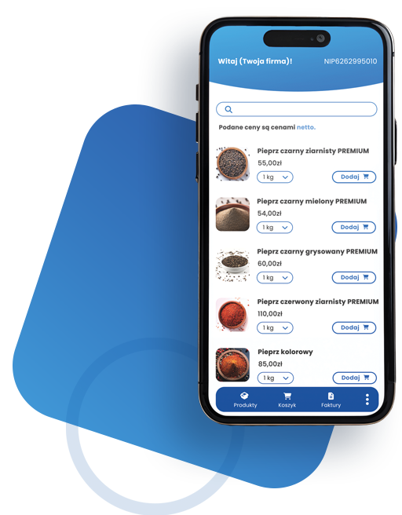

Ardrop.pl - platforma zakupow i narzedzi dla HoReCa - wszystko w jednym miejscu.

- Kupuj od wielu producentow - Jedno konto, wiele ofert i jedna historia zamowien.
- Zarzadzaj fakturami - Dokumenty automatycznie trafiaja do panelu restauracji.
- Dzialaj szybciej - Zamowienia i dostawy pod kontrola bez rozproszonych narzedzi.
Dlaczego ardrop? Marketplace i zaplecze operacyjne gastronomii.
Ardrop laczy zakupy B2B z funkcjami, ktore realnie wspieraja codzienna prace lokalu.
Marketplace HoReCa.
Automatyczne faktury.
Narzedzia dla restauracji.

Funkcje platformy - dla restauracji, ktore chca kupowac i zarzadzac madrzej.
- Marketplace HoReCa - Produkty od wielu producentow w jednym panelu.
- Automatyczne faktury - Rozliczenia i dokumenty gotowe po kazdym zamowieniu.
- Narzedzia operacyjne - Lepsze planowanie, kontrola kosztow i organizacja zakupow.
- Baza wiedzy - Webinary i poradniki dla zespolow gastronomicznych.
Pierwsi partnerzy Ardrop juz wspoltworza platforme. To sygnal, ze model zakupowy dla HoReCa dziala i skaluje
sie wraz z kolejnymi producentami.
Jak dziala ardrop? Prosty proces od rejestracji do dostawy.
W kilku krokach przechodzisz od uruchomienia konta do kompletnego zamowienia z faktura.
1. Rejestrujesz konto restauracji.
2. Przegladasz oferte producentow.
3. Skladasz zamowienie i odbierasz dostawe.
Wiecej niz marketplace - Ardrop rozwija sie jako platforma SaaS dla gastronomii.
- Webinary i szkolenia - Praktyczna wiedza dla zespolow i managerow.
- Kalkulatory food cost - Szybsze decyzje zakupowe i lepsza marza.
- Cyfrowe menu restauracji - Narzedzia wspierajace codzienna obsluge gosci.
- Zarzadzanie zamowieniami - Wieksza kontrola procesow i dokumentow.